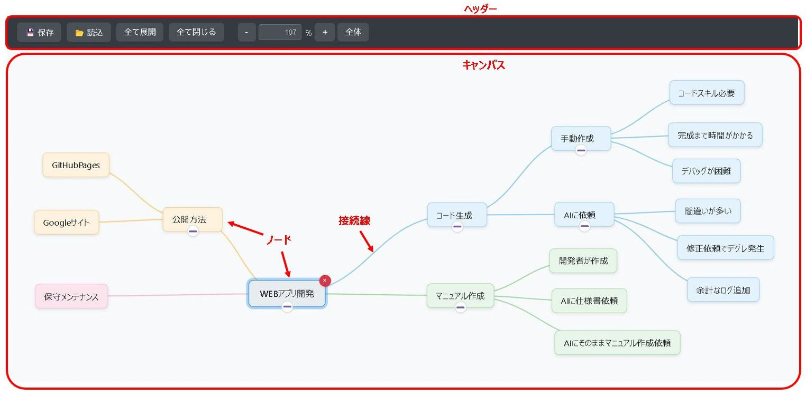
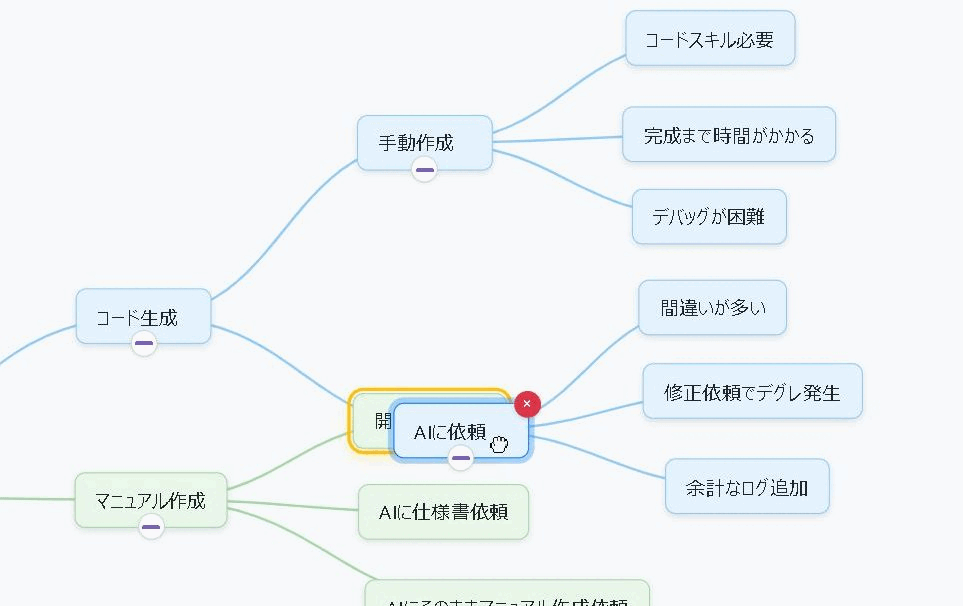

💡 マインドマップ (Mind Map)
中心となるテーマから放射状にアイデアや情報を繋げて、思考を整理・拡張するためのツールです。

主な特徴
- 階層構造: 中心トピックから子ノード、孫ノードへと無限にアイデアを広げられます。
- 直感的な操作: ドラッグ＆ドロップでノードを自由に移動・親子関係を変更できます。
- キーボード操作: Tabで子ノード追加、Enterで兄弟ノード追加など、キーボード中心の操作も可能です。
- 折りたたみ/展開: ノード下の階層を一時的に隠したり表示したりできます。
- ズーム＆パン: 広大なマップも快適に閲覧・編集できます。
- 自動配色: 第2階層（主トピック）ごとに自動で色分けされ、視覚的に区別しやすくなっています。
- データ保存/読込: 作成したマインドマップデータをJSONファイルとして保存・読み込みできます。
使い方マニュアル
画面構成
- ヘッダー: 保存/読込、展開/折りたたみ、ズームなどの操作ボタンがあります。
- キャンバス: マインドマップを作成する広大なエリアです。背景をドラッグで表示範囲を移動（パン）できます。
- ノード: アイデアや情報を書き込む箱です。
- テキストエリア: ノードの内容。ダブルクリックまたはF2で編集開始。
- 削除ボタン(×): ノード選択中に右上に表示され、クリックでノード（と、その配下）を削除します。
- 展開/折りたたみボタン(+/-): 子ノードを持つノードの下中央に表示され、クリックで配下の表示/非表示を切り替えます。
- 接続線: 親子関係のあるノード間を繋ぐ線です。
基本的な使い方
- ノードの選択: ノードをクリックします。選択されたノードは青い枠線でハイライトされます。
- ノードの追加:
- 子ノードを追加: 親となるノードを選択し、Tabキーを押します。
- 兄弟ノードを追加: 兄弟を追加したいノードを選択し、Enterキーを押します（ルートノード選択時は子ノードが追加されます）。
- ノードの編集: 編集したいノードをダブルクリックするか、選択してF2キーを押します。編集後、Enterキー（Shift+Enterで改行）またはノード外クリックで確定、Escキーでキャンセルします。
- ノードの移動: ノードをドラッグ＆ドロップで好きな位置に移動します。
- 親子関係の変更: 移動したいノード（子にしたいノード）をドラッグし、親にしたいノードの上でドロップします。ドロップ可能な場合、ドロップ先のノードが黄色くハイライトされます。ルートノードへの移動も可能です。 
- ノードの削除: 削除したいノードを選択し、右上に表示される×ボタンをクリックするか、DeleteまたはBackspaceキーを押します。配下のノードも全て削除されます（確認ダイアログが表示されます）。
- 展開/折りたたみ: 子を持つノードの下中央に表示される+（折りたたみ中）または-（展開中）ボタンをクリックします。ヘッダーの全て展開/全て閉じるボタンで一括操作も可能です。
- 表示の操作:
- パン: キャンバスの背景（ノードがない部分）をドラッグします。
- ズーム: ヘッダーの+/-ボタン、数値入力、またはCtrlキー（MacはCmd）を押しながらマウスホイールを操作します。
- 全体表示: ヘッダーの全体ボタンをクリックすると、全てのノードが画面内に収まるように調整されます。
データの保存と読込
- 保存: ヘッダーの💾 保存ボタンをクリックします。
MDM[日付時刻].jsonというファイル名でダウンロードされます。 - 読込: ヘッダーの📂 読込ボタンをクリックし、保存したJSONファイルを選択します。現在のマップ内容は上書きされます。